21 Chapter 21 — Rating Systems: DUPR, ELO, Glicko, and Skill
The rating math, the three rival systems, and the honest truth about small samples
21.1 Ratings Are the Skill Currency
Pickleball runs on DUPR; tennis on UTR; rugby league on the ladder and the betting line. A rating answers two questions at once — "how good is this player?" and "how sure are we?" — and in 2026 the answer is increasingly fed by computer vision: the eventing pipeline (chapter 19) produces match results, and a rating system converts them into a skill estimate. This chapter is the math, the three rival systems, and the honest truth about what 60 matches can tell you.
The same job is done differently in each sport. In pickleball, a DUPR of 4.0 with a 60% reliability score is tournament entry, seeding, and social claim all at once. In rugby league, the NRL ladder decides finals and the betting line prices a single Sunday; analysts treat the ladder as season narrative and the closing line as measurement. Same task: convert a history of outcomes into a number that predicts the next one.
Everything here is source-backed (the systems' own documentation, verified 2026-08-30) or measured (our lab's from-scratch implementation, E21).
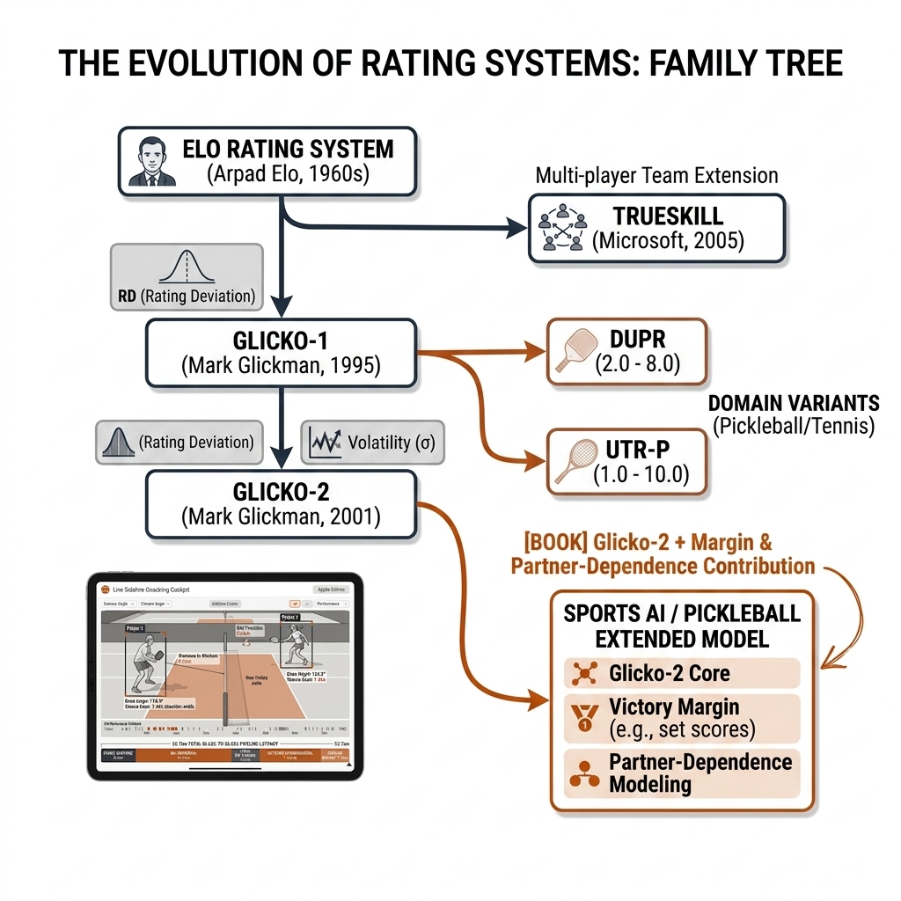
21.2 Rating Math From First Principles
All rating systems are one idea: expected score from a logistic, then move the ratings by the surprise. Latent skill produces an expected outcome; the observed outcome arrives; the gap updates the skill estimate. The systems differ only in the distribution of skill, the link function, and whether uncertainty is explicit.
Elo: expected = 1/(1+10^((Rb−Ra)/400)), update = K×(result − expected). Glicko-1/2 adds rating deviation (RD) — a per-player uncertainty that widens with inactivity and narrows after matches — and Glicko-2 adds volatility (how fast the player's rating changes over time). Bradley-Terry is the probabilistic foundation underneath them all; TrueSkill extends the Gaussian version to multi-player teams. Sections 21.2b–21.2d work each one.
Our lab implemented Elo and Glicko-2 from scratch — no libraries, the logistic and RD from first principles — and ran 60 matches on 8 players with known skills (1400–1700) and margin-aware outcomes (E21). The math is simple enough to write yourself, so you can see where it is honest and where it is not. The honest result:
| Measurement (E21) | Value |
|---|---|
| Mean absolute Elo error after 60 matches | 87.6 points (max 139) |
| Mean Glicko-2 RD after 60 matches | 99.8 points |
| Per-player spread | Elo errors ranged from −169.7 (player B) to +139.2 (player H); Glicko-2 RDs from 80.5 to 120.3 — the uncertainty estimate correctly sized the error |
| The honest truth | A rating from 60 matches is an estimate with wide error — not a skill fact. Ratings need hundreds of matches to converge. This is what the RD displays. |
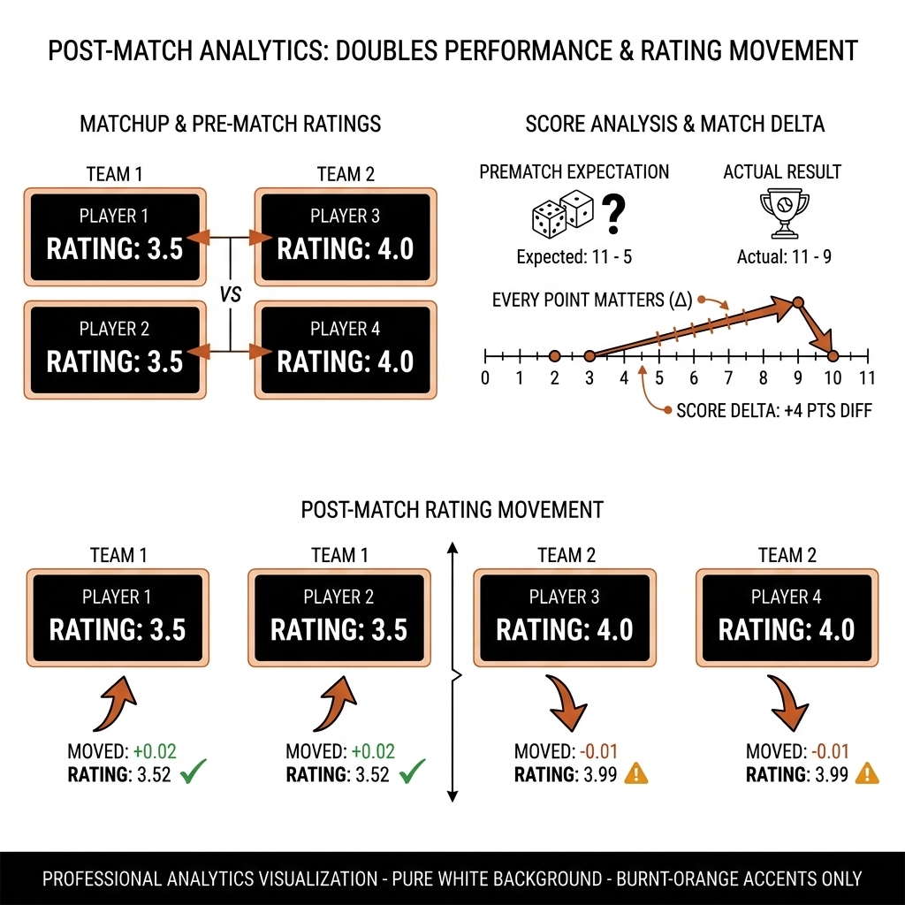
21.2b The Elo Update, Worked
Arpad Elo's system (FIDE, 1960s) remains the canonical reference, and it is worth doing once by hand because every system in this chapter is a patch on it. For two players with ratings R_A and R_B, the expected score of A is:
E_A = 1 / (1 + 10^((R_B − R_A)/400)) then R_A_new = R_A_old + K·(S_A − E_A)
Worked pickleball example: two singles players, rated 1500 and 1700 on a homebrew Elo scale. The 1500-player's expectation is 1/(1+10^(200/400)) ≈ 0.240. The underdog wins (S=1), and with K=32 the update is 32×(1−0.240) = +24.3 points; the favorite loses the same 24.3. The update is zero-sum: rating mass is conserved, which is why Elo ladders are stable but also why fixed-K systems drift (inflation and deflation return in 21.9b).
Worked rugby league example: the same math runs on clubs. Two NRL teams rated 1550 and 1650; the weaker club's expectation is 1/(1+10^(100/400)) ≈ 0.36. A home-ground term H (fit as 30–60 Elo points) shifts the logistic before the update, so a 20-point upset win at home moves the underdog 32×(1−0.36) ≈ +20 points — same machinery, different scale constant and venue term. The NRL itself is a points ladder, not an Elo system, but many public Elo-style competition models and betting-implied ratings are built around it.
Three properties matter in practice. Logistic, not Gaussian: Elo implementations use the logistic because it has heavier tails and convenient arithmetic — a 200-point gap gives E ≈ 0.76, a 400-point gap E ≈ 0.91. K is the learning rate: FIDE historically used K=40 for new players, K=20 for most, K=10 for top players — converge novices fast, keep veterans stable. K is Elo's only uncertainty mechanism: it knows how fast to move, but not how sure to be.
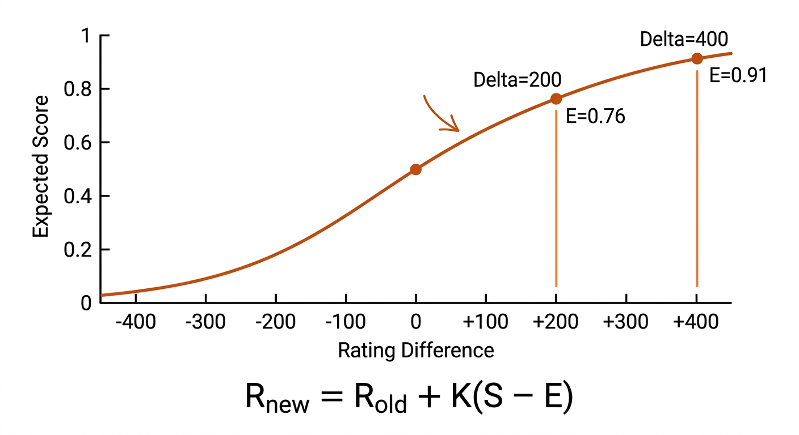
21.2c Glicko: Uncertainty as a First-Class Citizen
Mark Glickman's Glicko-1 (1999) adds the parameter Elo is missing: rating deviation, a standard deviation around the rating, so a player is modeled as N(R, RD²) rather than a point. Two rules make it behave. Before a rating period, inactivity inflates the uncertainty: RD_new = min(√(RD_old² + c²t), RD_max) — a player who has not played in six months is genuinely less known, and the math says so. During the update, opponents with high RD are down-weighted by the g-function, g(RD_j) = 1/√(1 + 3(q·RD_j/π)²) with q = ln(10)/400 ≈ 0.005756 — a result against a mystery opponent teaches you less than the same result against a well-measured one.
Glicko-2 (Glickman, 2001) adds a third parameter, volatility σ: the expected fluctuation in a player's skill between rating periods. This is the term that lets a rating jump after an injury, a coaching change, or a late-career decline rather than grinding slowly through the old estimate. The volatility update has no closed form — Glickman's algorithm solves for σ′ iteratively — which is the honest price of modeling abrupt skill change.
Lab example: a 1500-rated player with RD=120, σ=0.06 beats a 1700-rated opponent (RD=100) and a 1600-rated opponent (RD=50) in one rating period. The posterior lands at 1567.5 with RD 108.2 — a 95% interval of roughly [1356, 1779]. The upset drags the mean up, but the pre-period uncertainty keeps the interval honest. Translation: a 4.0 DUPR with three verified matches in six months is not the same claim as a 4.0 with forty; likewise, an NRL club after two rounds has a provisional rating no matter what the ladder says.
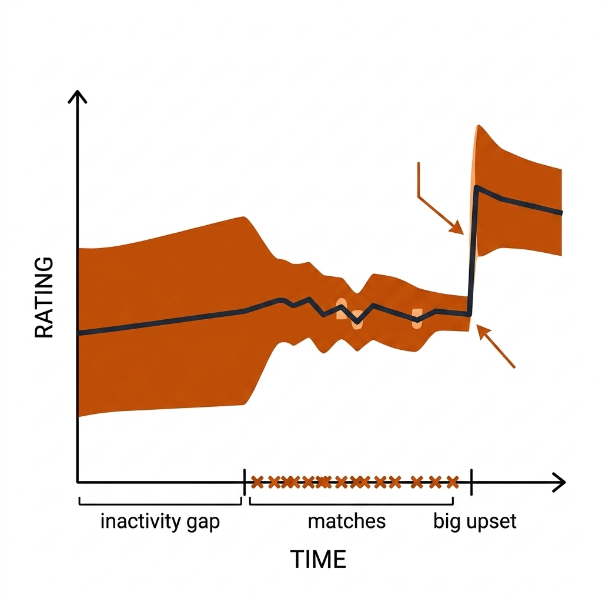
21.2d Bradley-Terry and TrueSkill
Underneath Elo sits the Bradley-Terry model: two competitors have latent positive strengths π_i and π_j, and P(i beats j) = π_i/(π_i + π_j). Taking logs turns it into a logistic regression on pairwise outcomes, and the strengths are estimated by maximum likelihood over the full match history. Elo is essentially online stochastic gradient descent on the Bradley-Terry log-likelihood with a fixed step size K — which tells you exactly when to prefer each: if you have a complete historical table of NRL results and want the most stable end-of-season ratings, fit Bradley-Terry offline; if you are updating a club ladder night by night, run Elo or Glicko online.
TrueSkill (Herbrich et al., 2006, Microsoft Research) is the fully Bayesian member of the family. Skill is a Gaussian N(μ, σ²); the update is expectation propagation over a factor graph of the match. New players start with high σ and converge in a handful of games; veterans resist noise. Draws are explicit, and — the feature nothing else in this chapter has — teams decompose naturally: a 2v2 outcome updates four individual posteriors, with the team's performance modeled from its members. That is precisely the pickleball doubles problem, and it is why TrueSkill is the reference point for the partner-dependence extension in 21.9. The tradeoff: the math is heavy, the implementation subtle, and for offline sports analytics Glicko-2 is usually sufficient. Use TrueSkill when team decomposition and exact posteriors are the deliverable.
21.3 DUPR: The Pickleball Standard
DUPR (Dynamic Universal Pickleball Rating) is the de facto official rating of USA Pickleball and the APP as of late 2025 (Forbes, 2025-12-05). Verified from dupr.com/how-it-works and the algorithm-update posts: the scale is 2.000 to 8.000 (the 0–8 or 0–8000 shorthand in conversation refers to this same range; the published precision is three decimal places), continuous, with singles and doubles tracked independently and mixed/age-based subscores layered on top. The bands a player actually experiences:
| DUPR band | Level | Practical meaning |
|---|---|---|
| 2.0–2.99 | Beginner / low intermediate | Rally basics, kitchen rule |
| 3.0–3.49 | Intermediate | Consistent dinks, third-shot choices |
| 3.5–3.99 | High intermediate | Most contested tournament bracket |
| 4.0–4.99 | Advanced | Reliable thirds, speed-ups, counters |
| 5.0–8.0 | Elite / professional | PPA/APP tour level |
The July 8, 2025 algorithm update moved DUPR from a primarily win/loss model to performance-vs-expectation: it predicts an expected score from team averages before the match and adjusts ratings on whether a team scored more or fewer points than predicted. A player can gain rating on a loss (11-9 against a stronger team, when 11-5 was expected) and lose rating on a hollow win. Every point matters because the margin is the signal, not the W.
Three weighting mechanisms ride on top. Source verification: sanctioned results outweigh self-posted scores — the anti-sandbagging gate. Recency and volume: recent matches weigh more, and variety of opponents/partners stabilizes the estimate — the informal counterpart of Glicko's RD. The gap rule: matches between teams whose average ratings differ by more than 1.0 may be excluded because the outcome is too predictable [verify]. The rule of thumb that a 0.5 DUPR gap maps to an expected score near 11-5 (68.75% of points) implies S ≈ 1.46 DUPR points per factor of ten in odds [verify].
The Reliability Score (1–100%) is DUPR's explicit uncertainty display based on volume, recency, opponent/partner variety, and match source, updated weekly. 60% or higher is a common tournament eligibility gate; it does not change the numeric rating. This is Glicko's RD translated into consumer language. DUPR pools singles and doubles outcomes separately (data pooling: the model pools every match within a format but not across formats), and recent results dominate through the recency weighting; a 4.0 singles player and a 4.0 doubles player are therefore not the same estimate. For builders, the structural fact is no public API: access is CSV exports and partner agreements; the rating data itself is the moat.
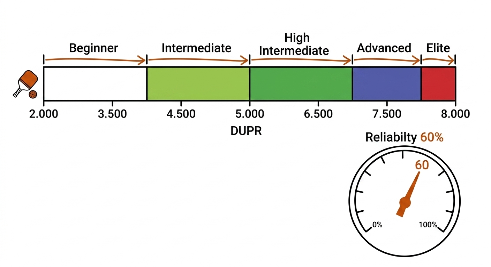
21.4 UTR-P: The University System
UTR-P (Universal Tennis Rating — Pickleball) is a modified Elo on a 1.00–10.00 scale (verified). For each match it computes a match rating from the rating differential plus the percentage of points won per game (11-5 is a different signal than 11-9) and a match weight from competitiveness, opponent reliability, time degradation, and format. The published rating is the weighted average of up to the 60 most recent match ratings.
Reliability is a status, not a percentage: projected after one match, reliable after roughly five to six — aggressive compared to Glicko's RD decay, defensible because the match-weight system discounts thin data. Verified (sanctioned) results outweigh unverified ones. On April 14, 2025, UTR Sports recalibrated every UTR-P rating downward 0.5 points to align the scale — a universal shift that preserved relative ordering but breaks any model trained on pre-April numbers, a lesson in 21.9b.
It is the closest algorithmic cousin to the book's homebrew — and it confirms the design consensus: margin matters, recency matters, verification matters.
21.4b The Duplication and Sport-Transplant Problems
Two structural problems follow from rating per sport rather than per player. The duplication problem: UTR already ran tennis, then minted UTR-P for pickleball, while DUPR built a rival standard — so a crossover athlete in 2026 carries a tennis UTR, a pickleball UTR-P, and a DUPR, three overlapping-skill numbers on incompatible scales. The April 2025 recalibration exists because two pickleball scales drifted apart. A dual-sport athlete's true skill is one latent variable; the ecosystem estimates it three times and never merges the evidence.
The sport-transplant problem is deeper: a rating is calibrated to its population and outcome distribution; it does not travel. A 4.0 DUPR says nothing about rugby league; an NRL club-Elo of 1600 says nothing about pickleball — and the failure is not just scale. The 400 in Elo's logistic, the ~1.46 in DUPR's, and the home-advantage term in an NRL model are each fit to how often upsets happen in that sport. Rugby league matches are higher-scoring and lower-variance than pickleball to 11, so the same gap implies a different win probability. Transplant the number and the model is systematically wrong. Transplant the architecture (logistic expectation, surprise update, explicit uncertainty) and re-fit S, K, and aging constants per sport — the same transfer discipline as chapter 23.
21.5 PPA World Pickleball Rankings
Launched 5 August 2026 for the 2026-27 season (verified): 14 best results in the trailing 52 weeks, with 50/35/15 weighting for gender doubles / mixed doubles / singles — the PPA's statement that the "best overall player" is primarily a doubles player. The PPA runs three standings:
| Standing | Purpose | Calculation |
|---|---|---|
| World Pickleball Ranking | Global standing | 14 best results × 52 weeks, 50/35/15 |
| Current Seed | Next bracket placement | Recent form at registration close |
| The Race | PPA Finals qualification | Calendar-year cumulative points |
WPR is a ranking, not a rating: it measures tournament success across disciplines, not calibrated head-to-head probability. Use it to understand who has earned the most on tour; do not use it to predict a single match.
21.5b Rugby League: The Ladder and the Market Rating
Rugby league's public instruments make the ranking-versus-rating distinction concrete. The NRL ladder is a points table — 2 for a win, 1 for a draw, differential as tie-break. It is a valid ground truth for season success but a poor predictor of any single match, because it weights all opponents equally and ignores venue, injuries, and recency: in rating terms it is a Bradley-Terry model with uniform weights and no uncertainty, which is why a sixth-placed team often beats a second-placed team without the ladder blinking. The same structure appears in the AFL ladder and the English Super League table: useful for season-long narrative, but not for single-match probability.
The sharper public instrument is the betting market. A club-Elo fit to results — logistic expectation, a home-ground term, margin-aware variants — tracks the ladder loosely but tracks the bookmaker's closing line tightly. Reverse-engineering it is standard: assume P(A) = 1/(1+10^(−(R_A − R_B + H)/S)), then fit team ratings R_i, home advantage H, and scale S to minimize the distance between model probabilities and de-vigged closing probabilities. The result is a market-calibrated Elo that usually out-predicts the ladder; its parameters (S, H) are league-specific, the sport-transplant lesson of 21.4b measured rather than asserted.
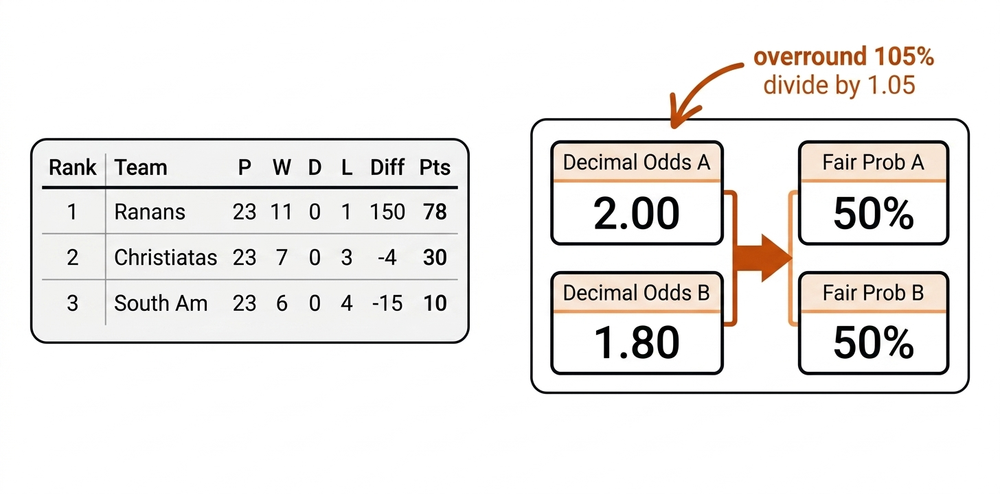
21.6 Win Probability From Ratings
The rating system's practical output is a probability: P(win) from the rating differential via the logistic, P(A wins) = 1/(1+10^(−Δ/S)), with S the system-specific scale. Using the lab-derived scales (S_DUPR ≈ 1.46 from the 0.5-gap ≈ 11-5 rule [verify]; S_UTR-P ≈ 2.0 assumed pending calibration data [verify]):
| Δ DUPR | P(win) | Δ UTR-P | P(win) |
|---|---|---|---|
| 0.00 | 50.0% | 0.00 | 50.0% |
| 0.50 | 68.8% | 1.00 | 76.0% |
| 1.00 | 82.9% | 2.00 | 90.9% |
| 2.00 | 95.9% | 3.00 | 96.9% |
For doubles, both systems collapse the match to team-average versus team-average: P(team A) = 1/(1+10^(−(R̄_A − R̄_B)/S)). That ignores partner interaction and within-match momentum — good enough for seeding, not for coaching claims. This probability is what the model compares against, and it crosses into chapter 22's expected value: both are probability machines that must be calibrated (chapter 20's Brier/log-loss discipline applies to both).
21.7 The CV + Rating Loop
The book's contribution is the closed loop: the eventing pipeline (C19) produces match-result rows with confidence; the rating consumes only the confident ones; low-confidence rows route to the human review queue. This is the verified pattern from the workflow dossier (the 8-12 clips rule applies to rating inputs too): CV verifies, ratings aggregate, the review queue catches the borderline.
The data path has three evidence layers, each mapping to an earlier chapter. Outcome evidence: rally detection and score progression from ball tracking and court geometry (C12), match termination from the state machine (C19). Identity evidence: which player is which, from the identity chapter's jersey/appearance models (C13) — a mislabeled point updates the wrong rating, so identity confidence gates the update directly. Context evidence: court/event verification, so a self-posted score cannot masquerade as a sanctioned result. The consumption rule: weight each match by the minimum of outcome, identity, and context confidence; in Glicko terms, inflate the effective opponent RD for shaky rows or route them to review.
One boundary must be held: this loop is a match-result ingestion pipeline, not a performance-judgment pipeline. Vision-Based Rating platforms (PB Vision, Dinkmate's VBR) estimate level directly from CV-derived shot quality — a different claim belonging to chapter 23's tactical models. Merging the two silently encodes CV biases into what should be an outcome measurement.
The identity chapter feeds the rating chapter: the player-label confidence that C13 assigns to every rally is the same weight that the Glicko-2 consumer uses to decide whether a match is a full observation or a review item. The loop is therefore C12 → C13 → C19 → C21, with a review gate at every transition where confidence drops below a threshold.
21.8 Alternative Ground Truth: Betting Markets
When no official rating exists — or the official one is private, as DUPR's is — the analyst constructs ground truth. The NRL ladder is the public-domain ranking; the betting market's implied probability is the sharpest public measurement. Three conversions turn prices into calibration data. Implied probability: P = 1/decimal odds. De-vigging: divide raw implied probabilities by the bookmaker's overround (e.g., a two-way market at 105% gets each side divided by 1.05) to recover a fair probability. Closing Line Value: CLV = (your odds / closing odds − 1) × 100% — the calibration signal of record for professionals.
21.9 The Honest Gap
No public free DUPR/UTR-P dataset exists. DUPR is partner/CSV-gated, UTR-P is proprietary, and PPA WPR is a points table, not a downloadable match database. The closest public resource is pklmart (Kaggle, CC BY-NC-SA 4.0): roughly 300,000 shot-level records across roughly 1,000 matches, mostly doubles at the 4.0–pro level — rich for tactics, but with no official ratings attached and anonymized player IDs that may not support rating inference [verify]. The book therefore cannot validate against the official systems directly; it demonstrates the math on synthetic data and pklmart-style results and keeps the claim scoped to what the data supports.
The book's contribution is a homebrew Glicko-2 + margin + partner-dependence model — a first-of-kind open reference implementation. The partner effect is the doubles problem neither DUPR nor UTR-P models directly: DUPR uses the team average, which lets a fixed partnership inflate or deflate both members' individual ratings. The homebrew model fits team strength as α·(individual average) + β·synergy(p1, p2) and lets the data decide whether β matters. Margin enters as point-fraction against a logistic in rating difference; Glicko-2 supplies the uncertainty that DUPR displays as its Reliability Score.
21.9b What a Rating Cannot Say
The honest limits, stated plainly. A rating is a match-outcome model, not a skill-attributes model. A 4.5 DUPR player may have a weaker third-shot drop than a 4.0 player; the rating averages over hundreds of rallies and hides the tactical shape. Outcome-based, not quality-based: DUPR knows who scored, not whether the point came from a constructed dink or an unforced error. Partner dependence confounds doubles (21.9). Scales drift: DUPR's July 2025 update and UTR-P's April 2025 −0.5 recalibration are explicit scale corrections; any model trained on pre-update numbers must be re-calibrated. Unverified data can be gamed, so both systems and the CV loop weight verified sources.
And the deepest limit is sample size, measured rather than asserted: in E21, after 60 matches against known true skills, Elo's mean absolute error was still 87.6 points (max 139) and Glicko-2's mean RD was 99.8 — the system knows it does not yet know. Convergence to single-digit error takes hundreds of matches per player. 60 matches buys an estimate with an honest error bar; publishing the error bar — RD, reliability percentage, confidence interval — is the difference between a measurement and a vibe.
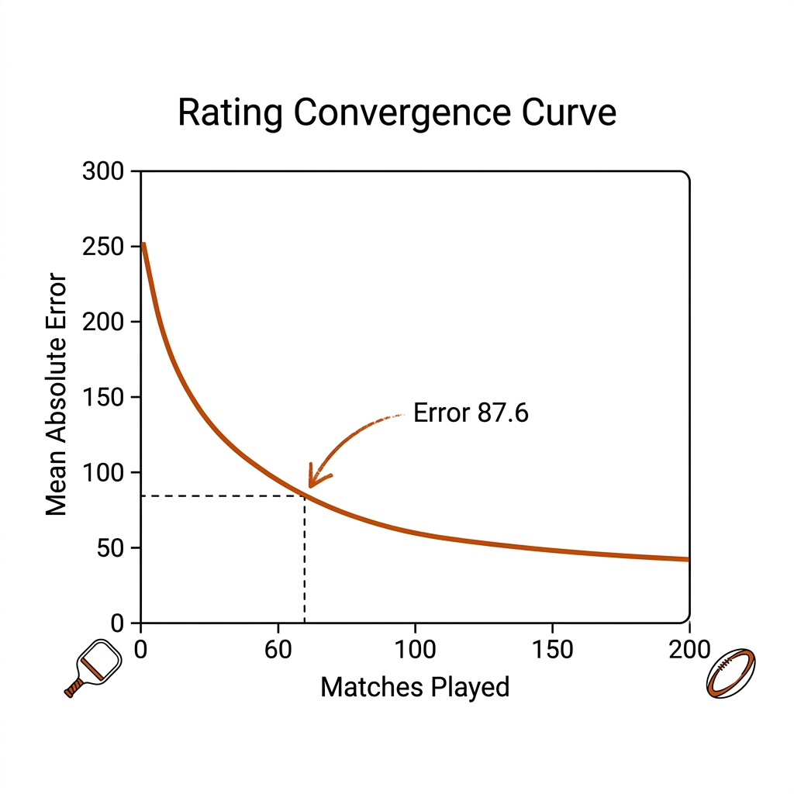
21.9c The 10 Use Cases: Applied Framework
The use cases below are the applied bridge from the rating math above to the decisions a club, a coach, or a selector actually faces. They follow three categories: A — Running the Systems in the Field (UC 01–04), B — The Honest Limits (UC 05–07), and C — Decisions Built on Ratings (UC 08–10). Each case pairs a pickleball and a rugby league application so the machinery transfers, and each carries its evidence label: measured (book experiment E21), source-backed (system documentation or paper), or [verify] (practitioner convention, not yet established).
Category A — Running the Systems in the Field (UC 01–04)
UC 01 — DUPR in Practice: The Club Ladder Night
A 200-member club runs a weekly ladder, and the number a player earns on Tuesday night must mean the same thing at tournament registration on Saturday. DUPR's July 2025 performance-vs-expectation model (source-backed) predicts an expected score from team averages before the match, then adjusts on the point differential: 3.5+3.5 versus 4.0+4.0 expects roughly 11-5, and an actual 11-9 moves both teams up. Sanctioned results outweigh self-posted scores, and the Reliability Score (volume, recency, variety) gates entry at 60% — Glicko's RD rendered in consumer language (21.3). The logistic scale behind the expectation, S ≈ 1.46 DUPR points per factor of ten in odds, is lab-derived [verify].
Payoff: tournament directors get seeding they can defend, and players get a ladder where every point matters, not just the W.
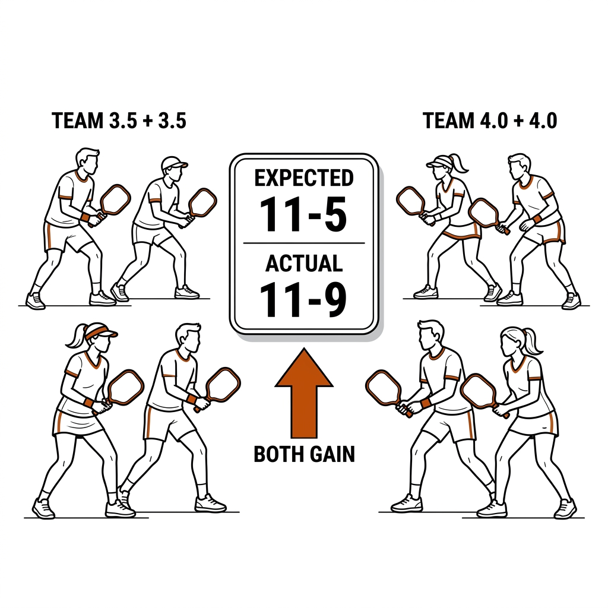
UC 02 — Elo for Rugby League Team Ratings
The NRL ladder ranks the season; a club-Elo prices next Sunday. The machinery is 21.2b's: logistic expectation, a home-ground term H fit at 30–60 Elo points, K = 20–32, with margin-aware variants scaling the update by the winning margin. The calibration move is the one that makes it honest: fit team ratings R_i, H, and scale S to minimize the distance between model probabilities and de-vigged closing probabilities, and the resulting market-calibrated Elo usually out-predicts the ladder (source-backed, 21.5b). A 20-point upset win at home moves the underdog ≈ +20 points at K=32 — large enough to matter, small enough to survive one bad Sunday.
Payoff: analysts get a weekly strength number that tracks the market instead of the narrative.
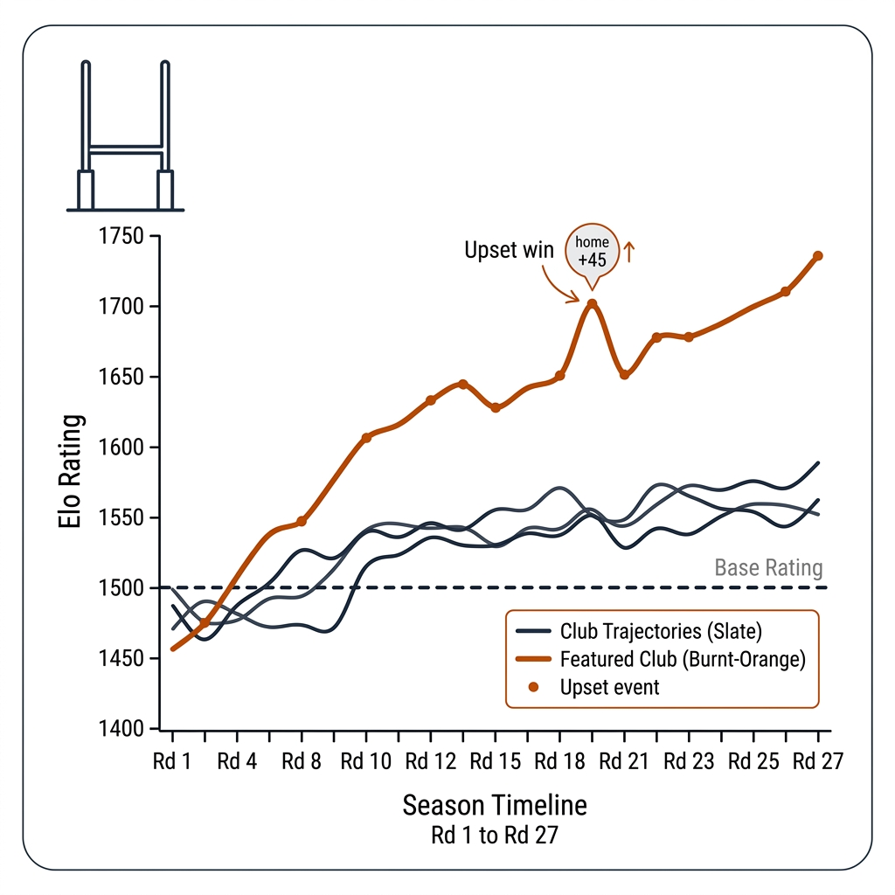
UC 03 — Glicko Uncertainty in Player Form
"Is this player actually in form?" is a question about a distribution, not a point. The player is N(R, RD²): the RD ages upward with inactivity, RD_new = min(√(RD_old² + c²t), RD_max), and narrows with each match cluster — so form is the trajectory of R with its 95% band (R ± 1.96·RD), never the trajectory alone. The measured constraint comes from E21: mean RD was still 99.8 points after 60 matches, so any form claim inside ±196 points of noise is a story, not a signal. Results against high-RD opponents are down-weighted by the g-function (21.2c), which is why a hot streak against mystery opposition moves the band less than the same streak against measured ones.
Payoff: coaches stop overreacting to two good weeks — and stop ignoring a genuine step-change when the band says it is real.
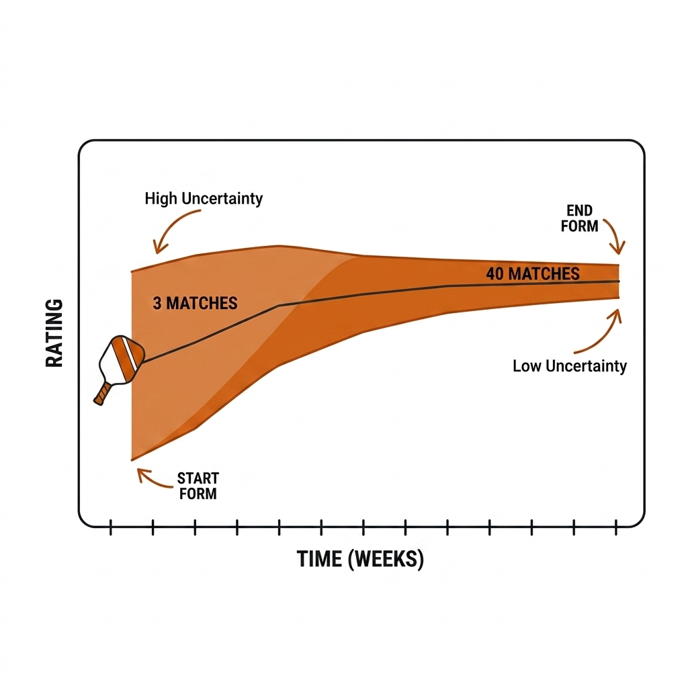
UC 04 — Match Outcome Prediction: The C22 Feed
Every preview and every expected-value model needs a calibrated win probability as its baseline, and the rating logistic is that baseline: P(A) = 1/(1+10^(−Δ/S)), with S_DUPR ≈ 1.46 [verify] and the club-Elo S fit per league against the market. Doubles collapses to team-average versus team-average — adequate for seeding, explicitly not a coaching claim (21.6). The discipline that keeps the number honest is C20's: score the probabilities on held-out matches with Brier and log-loss against the closing line, and treat any fancier model that cannot beat this one-term logistic as decoration, not signal.
Payoff: the rating chapter hands chapter 22 its prior — the ΔEPV of a decision is measured against what the rating already expected.
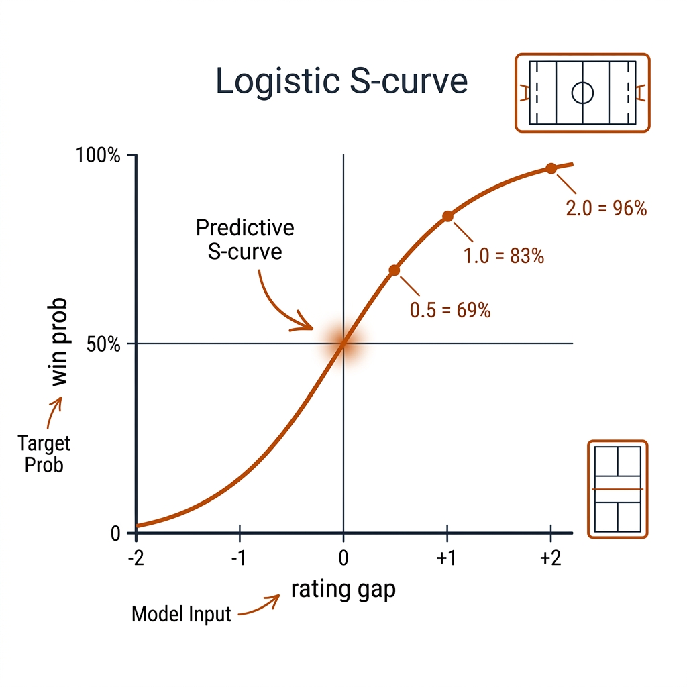
Category B — The Honest Limits (UC 05–07)
UC 05 — The Rating-vs-Skill Gap
A 4.5 DUPR player can have a weaker third-shot drop than a 4.0 — the rating averages over hundreds of rallies and hides the tactical shape. The system is outcome-based, not quality-based: it knows who scored, not whether the point came from a constructed dink rally or an opponent's unforced error (21.9b, source-backed). The quality claim belongs to chapter 23's tactical models and to the Vision-Based Rating boundary drawn in 21.7; merging the two silently encodes CV shot-style biases into what should be an outcome measurement. Rugby league has the same seam: a high-Elo club can carry a weak left-edge defense that the single number never shows.
Payoff: recruiters and selectors treat the rating as the shortlist floor, never the whole file — the tactical file comes from C23.
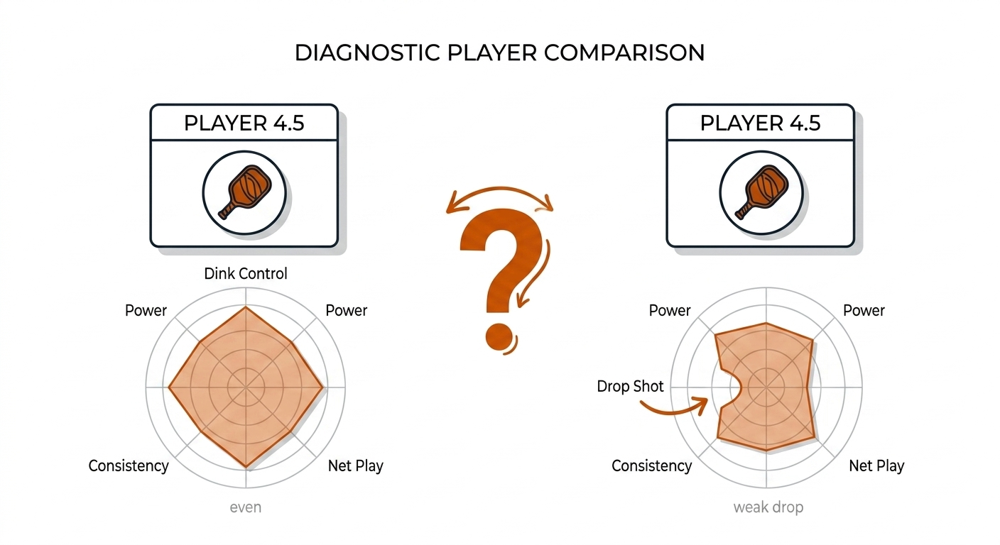
UC 06 — Rating Drift Over a Season
A rating computed in March is a stale claim by September, and a published scale correction breaks history outright: DUPR's July 2025 re-specification changed what the number measures, and UTR-P's April 2025 update shifted every rating down 0.5 points — ordering preserved, absolute values moved (source-backed). The countermeasures are mechanical: exponential recency decay (a per-day λ tuned to predict next-match outcome, the E21 extension program), a hard refit after every published scale correction, and a rule that no model trains across a scale break without re-calibration. Early-season club-Elo ratings are likewise dominated by the prior; by round 20 the data has taken over — the drift is the RD story told on a calendar.
Payoff: the model stays calibrated because the scale is treated as a moving target, not a constant.
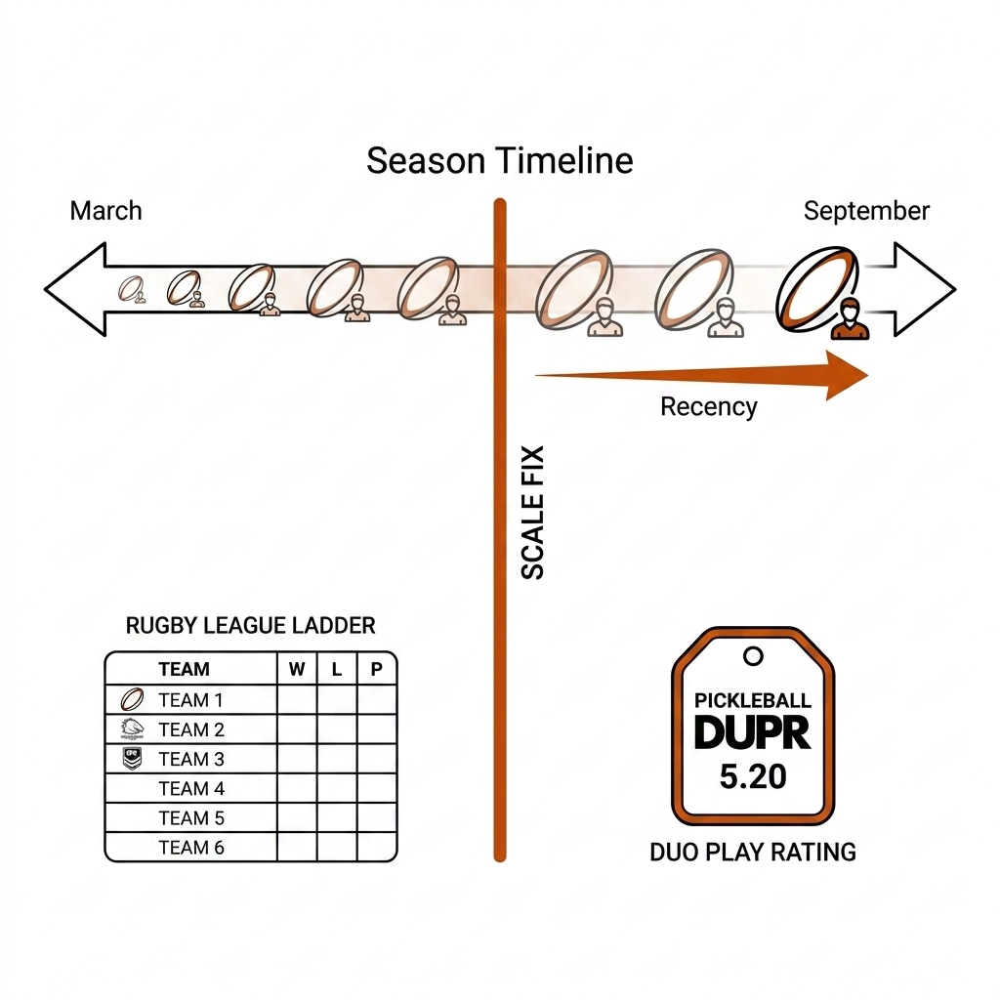
UC 07 — Rating Decay and the Injury Return
Six months out with an injury and the old number is a fiction — but so is pretending to know nothing. Glicko's inactivity rule inflates the uncertainty on exactly the right schedule, RD_new = min(√(RD_old² + c²t), RD_max), and the volatility term σ lets the rating jump on the comeback cluster instead of grinding slowly through the stale estimate (21.2c, source-backed). The practical display: the injured 4.5 enters the comeback tournament as a 4.5 with a wide band — provisional, not fake — and the first four games back carry reduced weight in any selection model until the band re-narrows [verify — the four-game convention is practitioner practice, not a published rule].
Payoff: honest provisional status replaces false precision at exactly the moment selection pressure is highest.
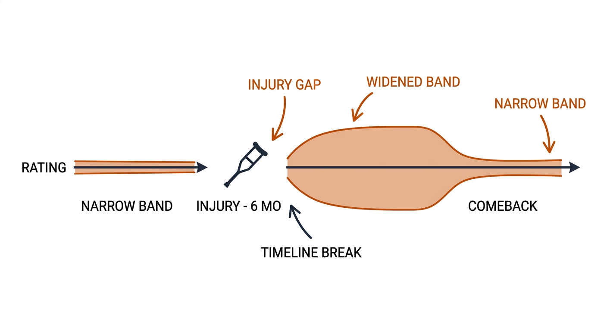
Category C — Decisions Built on Ratings (UC 08–10)
UC 08 — Pairing Fairness in Doubles
Social and competitive doubles live or die on fair pairings, and the team-average model confounds everyone: a fixed partnership drags both individual ratings toward the pair's mean, so a strong player carrying a weak partner arrives at the next pairing night under-rated, and the carried partner arrives over-rated. The homebrew fix fits team strength as α·(individual average) + β·synergy(p1, p2) and lets the data decide whether β clears zero (the E21 extension program); TrueSkill's factor graph is the reference for the alternative — one 2v2 result decomposes into four individual posterior updates (source-backed, 21.2d). Rugby league's version is the halves pairing and the centre-wing edge: combination effects that a pure average of individual ratings cannot see.
Payoff: fair Tuesday nights, and individual ratings that survive a partner swap.
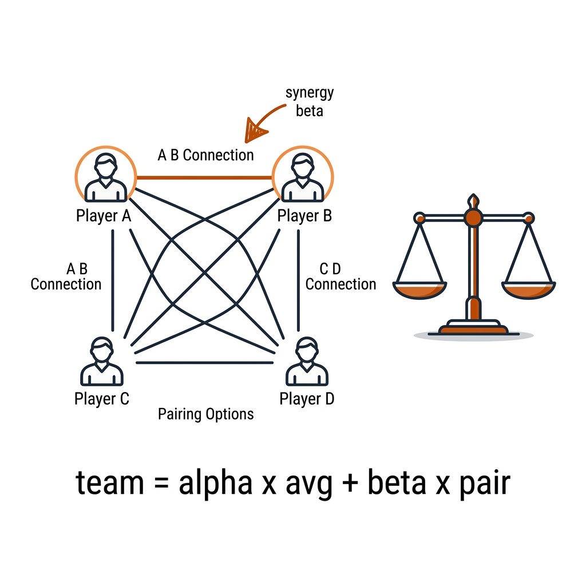
UC 09 — Selection Decisions: Which Rating to Trust
DUPR says 4.2, UTR-P says 6.1, the homebrew says 1580 ± 110, and the PPA ranking says seventh in the world — which number does the selector use? The discipline has three steps. Ranking versus rating first: WPR is a tournament-success ranking, not a calibrated probability — never seed a match with it (21.5). Calibration second: prefer the system that scores best on held-out log-loss against known outcomes or the market, scored with C20's machinery. Reliability third: gate on the RD or reliability percentage, applying the minimum-confidence rule of 21.7 — a precise number from a thin system loses to an honest interval from a thick one. The same three steps order the NRL ladder, a club Elo, and the market-implied rating for rep selection.
Payoff: selection meetings argue about players, not about whose number is real.
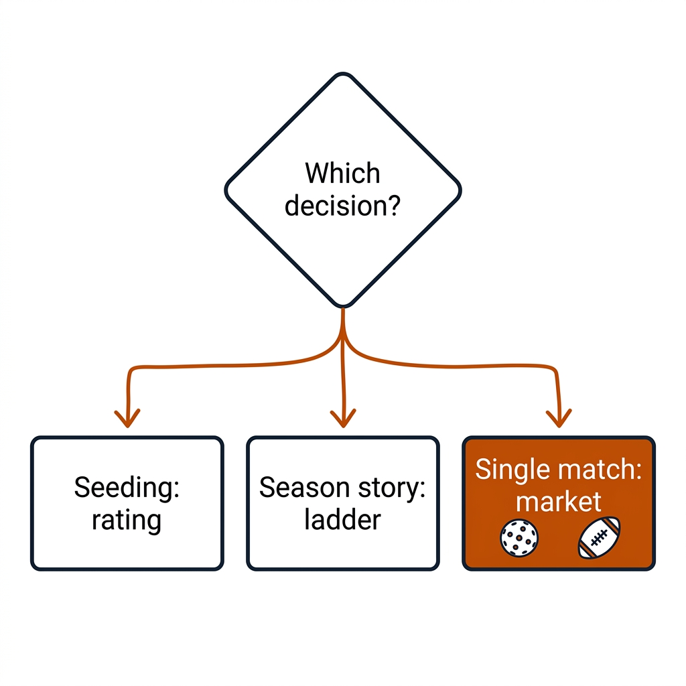
UC 10 — Leaderboard Design
A public leaderboard is an incentive system, not a display: publish a bare number and you get sandbagging, rating-farming against weak fields, and inactivity dodging. The design pattern that works is the one DUPR converged on (source-backed): rating and reliability displayed together, verified sources weighted above self-posted results, minimum-match gates before a rank is shown, and decay or a staleness flag for inactive players. The E21 convergence curve is the design constraint made quantitative — below a few dozen matches the number is a vibe, and an honest board says so with the reliability column rather than hiding it. A club that implements exactly this finds the incentives pointing the right way: the shortest path up the board is playing more verified matches.
Payoff: the board rewards exactly the behavior a healthy competition wants — more verified matches against varied opposition.
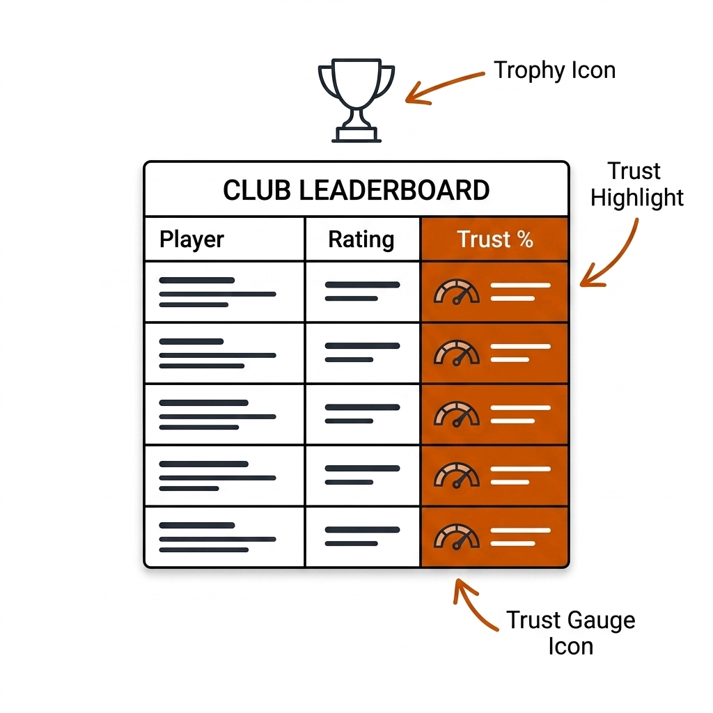
21.9d Runnable Implementation: The Rating Engine Skeleton
The minimal engine — Elo update, Glicko inactivity aging, opponent down-weighting, margin signal, and the C19 confidence gate — is the starting skeleton; the full lab lives at lab/w5_lab_ratings.py (E21):
import math
def elo_update(ra, rb, score, k=32.0):
"""One Elo step: score is 1/0, or point-fraction for margin-aware variants."""
exp_a = 1.0 / (1.0 + 10.0 ** ((rb - ra) / 400.0))
return ra + k * (score - exp_a)
def age_rd(rd, days, c=8.0, rd_max=350.0):
"""Glicko inactivity inflation: the comeback player's band balloons on schedule."""
return min(math.sqrt(rd**2 + (c * days / 30.0) ** 2), rd_max)
def g_weight(rd_j):
"""Down-weight mystery opponents: a result vs high RD teaches less."""
q = math.log(10.0) / 400.0
return 1.0 / math.sqrt(1.0 + 3.0 * (q * rd_j / math.pi) ** 2)
def consume_match(row):
"""C19 eventing row -> gated, weighted rating update."""
conf = min(row.outcome_conf, row.identity_conf, row.context_conf)
if conf < 0.70: # review gate: low-confidence rows queue for a human
return ("REVIEW", row)
k_eff = 32.0 * conf # fractional-K for shaky-but-usable evidence
margin = row.points_won / max(row.points_played, 1)
return ("UPDATE", elo_update(row.ra, row.rb, margin, k=k_eff))21.9e What This Adds to the Pipeline
The ten use cases hang on the book's closed loop rather than standing alone. C19's eventing pipeline emits the match-result rows with outcome, identity, and context confidence that UC 01, UC 08, and UC 10 consume; C20's Brier and log-loss discipline scores every probability UC 04 and UC 09 emit; the rating logistic is the prior that chapter 22's expected-value models must beat before claiming any added signal; the rating-versus-skill boundary of UC 05 is the seam where chapter 23's tactical models take over; and the cockpit and practice surfaces of chapters 28–29 display rating, reliability, and recency exactly as UC 10 specifies. The honest labels mark what is measured (E21), documented (DUPR, UTR-P, Glicko, TrueSkill), or still practitioner convention [verify] — the gap rule, the S ≈ 1.46 scale, and the four-game comeback convention among them.
21.10 The Ratings Recipe (Copy This)
- Start with Elo: the logistic + K-factor; it is 10 lines and correct for one-on-one.
- Upgrade to Glicko-2 when you need a per-player reliability (the RD is the honesty the DUPR reliability % displays).
- Add margin: 11-5 is a different signal than 11-9; the point-per-game weighting is the UTR-P lesson.
- Add partner dependence for doubles: the team-average is a crude interaction; the book contribution is the interaction term.
- Validate against the market: betting-implied probability is the sharpest public calibration reference (closing-line value).
- Feed from CV: C19 eventing produces match results with confidence; weight by the minimum of outcome, identity, and context confidence; low-confidence rows route to review.
- Re-fit constants per sport: scale, K, home advantage, and aging rates are population-calibrated — transplant the architecture, never the parameters.
- Publish the sample size: 60 matches is not a rating; hundreds are. The RD or the CI says it.
21.11 What I Would Measure Next
- Homebrew Glicko-2 + margin + partner effect on synthetic and pklmart-style results: does β (synergy) clear zero, or is DUPR's team-average adequate?
- Feed C19 eventing's confident match results into the rating; measure convergence vs the betting-implied ground truth, scored with C20's Brier/log-loss.
- Recalibration drift: quantify how much a DUPR-scale correction (July 2025) or UTR-P shift (April 2025) moves a homebrew model's held-out log-loss.
21.12 Sources
- DUPR how-it-works and the July 2025 performance-vs-expectation update; the Reliability Score post (dupr.com/how-it-works; dupr.com/post/dupr-algo-update-win-or-lose-your-rating-can-go-up; dupr.com/post/introducing-the-dupr-reliability-score). Forbes on DUPR's 2025 consolidation (forbes.com/sites/toddboss/2025/12/05).
- UTR-P algorithm and the April 2025 recalibration (utrsports.net/pages/how-utr-p-works; support.universaltennis.com, articles 9000234183 and 9000267476). PPA World Pickleball Rankings (ppatour.com/world-pickleball-rankings-be-the-best, Aug 2026).
- Elo (logistic + K; en.wikipedia.org/wiki/Elo_rating_system), Glicko-1/2 (RD + volatility; glicko.net/glicko/glicko2.html; Glickman, J. Applied Statistics 28:673-689, 2001), Bradley-Terry, TrueSkill (microsoft.com/en-us/research/project/trueskill-ranking-system).
- NRL ladder (nrl.com/ladder); closing-line value, de-vigging, and implied probability per standard sports-betting analytics convention. pklmart dataset (kaggle.com/datasets/cakesofspan/pklmarts-competitive-pickleball-extracts, CC BY-NC-SA 4.0). Vision-Based Rating context (dinkmate.ai; pb.vision).
- Lab:
lab/w5_lab_ratings.py→experiments/c21-ratings/outputs/metrics.json(E21: 87.6 mean abs Elo error, 99.8 mean RD after 60 matches).